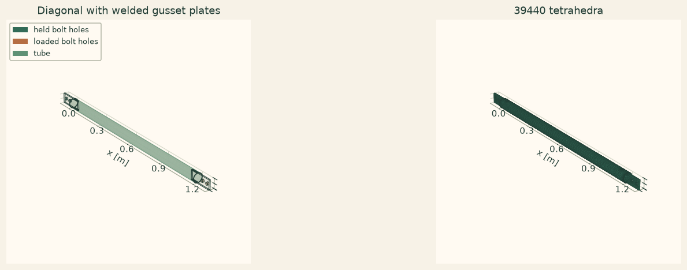

Docs › Examples › Stiffness of a mast diagonal with welded end plates
Linear elasticity · 3D
Stiffness of a mast diagonal with welded end plates
A tubular lattice-mast diagonal with gusset plates welded into slotted tube ends and bolted, pulled along its axis.
Run locally with OneSimulation. The example downloads are free. Running them requires an activated runtime. Runtime Alpha 0.2.1a7 · CPython 3.13 on macOS (Apple Silicon), Ubuntu 22.04 (x86-64), and Windows x64. Installation and activation · View pilot plans. Scope of the reference checks.

What it computes
OneSimulation solves the whole diagonal, tube, plates and bolt holes, as a 3D solid on quadratic tetrahedra; the stiffness of the mounting follows from the displacement of the loaded bolt holes and is set against the ideal bar stiffness of the tube. The script that builds the STEP file comes with the notebook.
What it checks
In the middle of the tube the axial stress matches the transmitted force over the tube area within 0.12 %; the mounting reaches 86.5 % of the bar stiffness EA/L, the end connections adding 0.082 mm to the 0.61 mm elongation.
Geometry
The notebook starts at the import of the CAD file mast_diagonal_mounting_stiffness.step: STEP (AP242), readable by any CAD program, with the names of the faces that the boundary conditions use. Put it next to the notebook.


The geometry script
The script mast_diagonal_mounting_stiffness_geometry.py builds the geometry with the CAD objects of OneSimulation and writes the file. Change a dimension there, run it, and run the notebook again.
"""Geometry of the OneSimulation example "Stiffness of a mast diagonal with welded end plates".
Builds the diagonal of a lattice mast with the CAD objects of OneSimulation: a steel tube 60 mm in
outer diameter with a 3 mm wall and 1.2 m long along x, slotted at both ends to take a welded
gusset plate 8 mm thick and 60 mm high that reaches 50 mm into the tube and 100 mm beyond it. Each
plate carries two bolt holes of 18 mm diameter. Writes mast_diagonal_mounting_stiffness.step with
the face groups fixed_bolts (holes of the plate at x < 0), loaded_bolts (holes of the plate at
x > 1.2 m) and tube (outer tube surface).
"""
from onesim.cad.d3 import AnnularCylinder, Box
length, outer, wall, plate, height = 1.2, 0.030, 0.003, 0.008, 0.060
tube = AnnularCylinder(
inner_radius=outer - wall, outer_radius=outer, length=length, axis=(1.0, 0.0, 0.0)
)
gussets = [
Box(length=0.150, width=plate, height=height, origin=(x0, -plate / 2, -height / 2))
for x0 in (-0.100, length - 0.050)
]
diagonal = tube | gussets[0] | gussets[1]
for x in (-0.080, -0.040, length + 0.040, length + 0.080):
diagonal = diagonal.hole(0.018, at=(x, plate / 2, 0.0), direction=(0.0, -1.0, 0.0))
bolt = lambda face: face.kind == "cylinder" and abs(face.radius - 0.009) < 1e-9
diagonal = diagonal.grouped(
fixed_bolts=diagonal.select(faces=lambda face: bolt(face) and face.center[0] < 0),
loaded_bolts=diagonal.select(
faces=lambda face: bolt(face) and face.center[0] > length
),
tube=diagonal.select(
faces=lambda face: face.kind == "cylinder" and abs(face.radius - outer) < 1e-9
),
)
diagonal.save("mast_diagonal_mounting_stiffness.step")The notebook
The complete notebook, cell by cell. Run it to produce the figures and the comparison printout.
The legs of a lattice mast are braced by diagonals. A diagonal is rarely a plain bar: a tube is slotted at its ends, a gusset plate is welded into each slot and the plates are bolted to the legs. Under wind the diagonals carry axial forces, and the stiffness of the bracing, and with it the twist of the antennas on top, depends on how stiff these assemblies really are.
The tube is 60 mm in outer diameter with a 3 mm wall and 1.2 m long; the plates are 8 mm thick and 60 mm high, reach 50 mm into the tube and carry two bolt holes of 18 mm each. One plate is held at its bolt holes, the other is pulled along the axis with \(F=50\) kN, spread evenly over its two bolt holes.
| face | condition |
|---|---|
fixed_bolts | \(\mathbf u=0\) |
loaded_bolts | traction \(F/A_{holes}\ \mathbf e_x\) |
| all other faces | free |
The diagonal comes from the CAD file mast_diagonal_mounting_stiffness.step, written by mast_diagonal_mounting_stiffness_geometry.py with the CAD objects of OneSimulation.
Reference. Away from the plates the tube carries the uniform axial stress \(\sigma=F/A\), \(A=\pi(r_o^2-r_i^2)\), by equilibrium alone. A perfect bar of the tube's length has the stiffness \(EA/L\); the computed stiffness of the mounting, \(F\) divided by the displacement of the loaded bolt holes, shows the share of compliance that sits in the plates, the slotted ends and the bolt holes (Eurocode 3, EN 1993-3-1, Towers, masts and chimneys, treats this joint flexibility in the analysis of lattice towers).
import numpy as np
from onesim.cad.d2 import Plane
from onesim.cad.exchange import load
from onesim.materials import IsotropicSolid
from onesim.meshing import LocalRefinement, TetrahedralMesher
from onesim.numerics import Numerics
from onesim.numerics.fem import FiniteElement, Lagrange
from onesim.numerics.linear import SparseDirect
from onesim.physics.solid_mechanics import (
FixedDisplacement,
LinearElasticity,
Traction,
TractionFree,
)
from onesim.simulation import Problem, Simulation
from onesim.visualization import plots, theme
theme.set()Geometry and mesh
Quadratic tetrahedra of 8 mm along the tube and 3 mm at the bolt holes.
diagonal = load("mast_diagonal_mounting_stiffness.step")
faces = diagonal.boundaries
mesh = TetrahedralMesher(
target_size=0.008,
refinements=(
LocalRefinement(
region=faces.fixed_bolts | faces.loaded_bolts, target_size=0.003
),
),
).generate(diagonal)
view = plots.Camera(elevation=25, azimuth=-35)
fig = plots.figure(1, 2, size=(16, 5))
plots.geometry(
diagonal,
selection={
"held bolt holes": faces.fixed_bolts,
"loaded bolt holes": faces.loaded_bolts,
"tube": faces.tube,
},
labels=False,
camera=view,
title="Diagonal with welded gusset plates",
ax=fig[0],
)
plots.mesh(
mesh,
groups=("all",),
legend=False,
camera=view,
title=f"{mesh.cell_count} tetrahedra",
ax=fig[1],
)
plots.show()Model
force, length, outer, inner = 50e3, 1.2, 0.030, 0.027
youngs_modulus = 210e9
steel = IsotropicSolid(
density=7850.0,
specific_heat_capacity=460.0,
thermal_conductivity=50.0,
youngs_modulus=youngs_modulus,
poisson_ratio=0.3,
thermal_expansion_coefficient=12e-6,
)
model = LinearElasticity(domain=diagonal.volume, material=steel)
hole_area = sum(
face.area for face in diagonal.faces if face.id in faces.loaded_bolts.members
)
problem = Problem(
name="Mast diagonal",
geometry=diagonal,
physics=(model,),
boundary_conditions=(
FixedDisplacement(
boundary=faces.fixed_bolts, physics=model, value=(0.0, 0.0, 0.0)
),
Traction(
boundary=faces.loaded_bolts,
physics=model,
value=(force / hole_area, 0.0, 0.0),
),
TractionFree(
boundary=faces.all - faces.fixed_bolts - faces.loaded_bolts, physics=model
),
),
)
result = Simulation(
problem=problem,
mesh=mesh,
numerics=Numerics(
spatial=FiniteElement(element=Lagrange(order=2)), linear_solver=SparseDirect()
),
).solve_stationary()
displacement, stress = result.field(model.displacement), result.field(model.stress)Results
The hole load is integrated over the facets of the meshed holes, which are slightly smaller than the round CAD holes, so the transmitted force is taken from the reaction at the held holes. The axial stress in the middle of the tube, averaged around the mid-wall circle, is compared with this force over \(A\); the stiffness of the mounting, from the mean displacement of the loaded bolt holes, with the bar stiffness \(EA/L\) of the tube alone.
area = np.pi * (outer**2 - inner**2)
angle = np.linspace(0.0, 2 * np.pi, 48, endpoint=False)
ring = np.column_stack(
(np.full_like(angle, length / 2), 0.0285 * np.cos(angle), 0.0285 * np.sin(angle))
)
middle = stress.evaluate(ring)[:, 0]
stretch = displacement.sample(along=faces.loaded_bolts).values[:, 0].mean()
transmitted = -displacement.reaction(faces.fixed_bolts)[0]
stiffness, bar = transmitted / stretch, youngs_modulus * area / length
print(
f"transmitted force (reaction at the held holes) {transmitted:.0f} N, nominal {force:.0f} N"
)
print(
f"axial stress in the middle of the tube: simulation {middle.mean() / 1e6:.2f} MPa (spread {np.ptp(middle) / 1e6:.3f} MPa), "
f"force/A = {transmitted / area / 1e6:.2f} MPa, deviation {100 * (middle.mean() * area / transmitted - 1):+.2f} %"
)
print(
f"elongation of the mounting {1e3 * stretch:.4f} mm, stiffness {stiffness / 1e6:.1f} N/µm"
)
print(
f"bar stiffness EA/L of the tube {bar / 1e6:.1f} N/µm: the mounting reaches {100 * stiffness / bar:.1f} % of it; "
f"the end connections add {1e3 * (stretch - transmitted / bar):.4f} mm of the {1e3 * stretch:.4f} mm elongation"
)Figure
The von Mises stress in the plane of the gusset plate at the loaded end, the axial stress along the tube against the transmitted force over \(A\), and the stiffness of the mounting against the bar stiffness.
x = np.linspace(0.02, length - 0.02, 81)
along = stress.evaluate(
np.column_stack((x, np.zeros_like(x), np.full_like(x, 0.0285)))
)[:, 0]
megapascal = lambda s, position: s / 1e6
fig = plots.figure(1, 3, size=(19, 5.5))
plots.section(
result.field(model.von_mises_stress),
plane=Plane(origin=(0, 0, 0), normal=(0, 1, 0)),
component=megapascal,
limits=(0, 250),
subdivisions=3,
label="von Mises stress [MPa]",
title="Gusset plate in the slotted tube end (y = 0)",
xlimits=(length - 0.1, length + 0.1),
ylimits=(-0.04, 0.04),
xlabel="x [m]",
ylabel="z [m]",
ax=fig[0],
)
plots.line(
points={"simulation, top of the tube wall": (x, along / 1e6)},
hlines={"force / A": transmitted / area / 1e6},
xlabel="x along the diagonal [m]",
ylabel="σ_xx [MPa]",
ylimits=(80, 150),
title="Axial stress along the tube",
legend="upper center",
ax=fig[1],
)
plots.bars(
["tube as an ideal bar", "mounting with end plates"],
{"axial stiffness": [bar / 1e6, stiffness / 1e6]},
ylabel="axial stiffness [N/µm]",
title="Stiffness of the diagonal",
ax=fig[2],
)
plots.show()Going further
Make the gusset plates thicker or let them reach further into the tube in mast_diagonal_mounting_stiffness_geometry.py and write the STEP file again to see how much stiffness the joint gives back; or replace the uniform hole load by contact with the bolts.